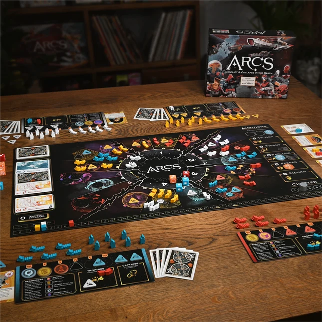
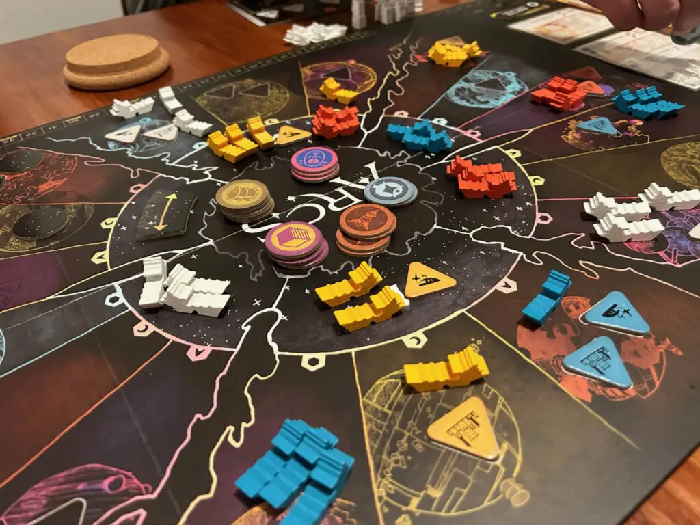
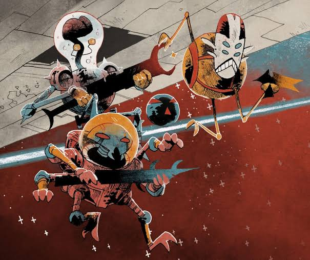
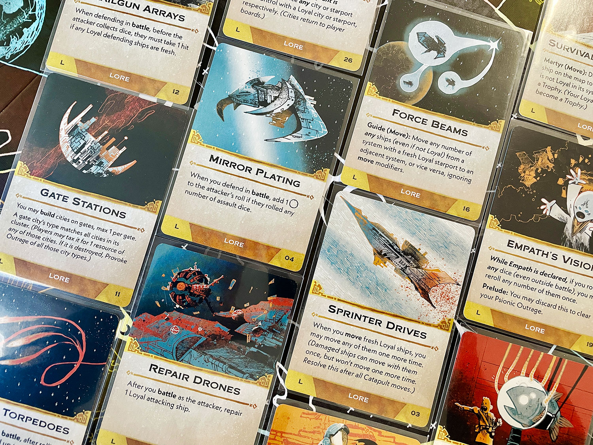

Description
Arcs is a sharp, tactical space opera game set in a dark yet silly universe. Players represent officials from a distant, decaying and neglectful Empire who are now free to vie for dominance whether through battle, gathering scarce resources or diplomatic intrigue. Ready yourself for dramatic twists and turns as you launch into this galactic struggle.
A deck of cards in 4 suits with ranks from 1-7 (2-6 for fewer than 4 players) defines the action selection system. These cards are played in a trick-taking adjacent system to select actions, take the initiative and declare Ambitions. The 3 declared Ambitions are what will score in that deal. Timing is everything. Bad hands must be mitigated by careful card play and benefitting from other players' card play.
Battles are resolved quickly with the attacker choosing their level of risk. The defenders must be prepared with adequate defensive ships and cards in their tableau.
Each game contains a hundred wooden ships and agents, 18 custom engraved dice, a beautiful six-panel board, and tons of cards with over 60 pieces of unique art. The base game may be played without the optional Leaders and Lore cards (for an easier teach) or with them for a richer, fuller and asymmetric game. It is also the core of the campaign game (requiring the Blighted Reach Expansion), which provides an epic, more thematic experience.
Information
- Players: 2 - 4
- Playing Time: 60 - 120 Minutes
- Age: 14+
- Complexity: 3.45 / 5
- Game Type: Strategy
- Categories:
- Science Fiction
- Space Exploration
- Wargame
- Trick Taking Game
Review
Arcs is a beautifully designed game. As a player it is easy to see the sheer amount of love not just put into the specific mechanics of the board, but the entrire game itself. It is an intuitive wargame down to its core built on top of a trick taking card game, which truly makes a player feel like a commander in charge of a fleet of ships scouring the galaxy for control.
Gallery



